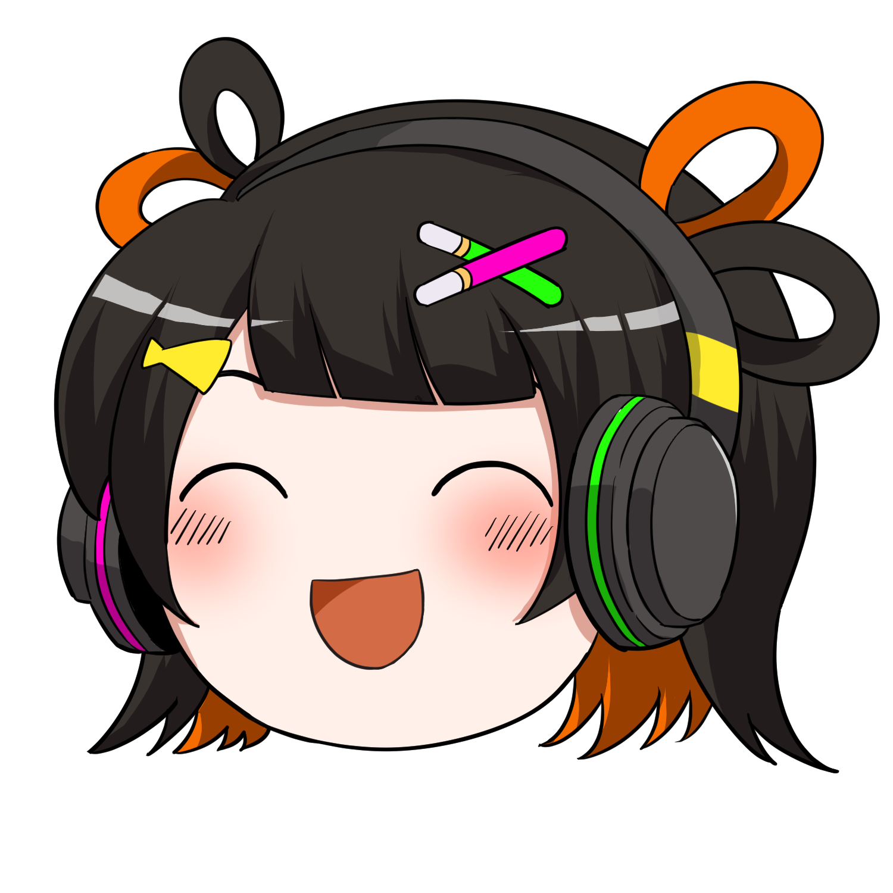
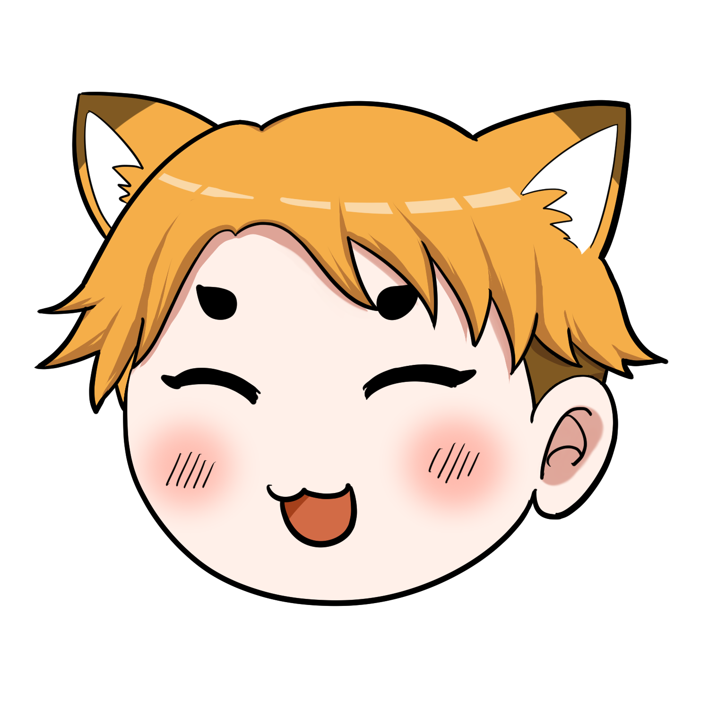

追憶のきらめき ランキングいま支えている人 ― ニコニコ生放送
Kimito-Link Project
いまこの瞬間、配信を支えている人（ギフト・広告・コメント）を配信ごとに。配信サムネ・配信者・経過時間つき。

りんく
こん太このページは最短 60 秒で取り直すのだ。配信中の応援を1 秒単位で、しかも自分の配信の記録として残したいなら、本体の Chrome 拡張「君斗りんくの追憶のきらめき」！ 応援レーン・会場モード・読み上げまで、配信ページの横に全部出るのだ。
★このページは配信者ではなく「応援した人」を並べます（追憶のきらめき ランキング）。
ギフト・広告のランキング（名前・順位・ポイント）は、ニコニコ生放送が公開しているものをそのまま出しています。当サイトが独自に集計・改変した値ではありません。配信サムネ・配信者名・アイコンも、ニコニコ生放送の番組ページに掲載されているものです。
★「+○pt」は、公開ポイントの前回取得（60 秒ごと）との差です。
★4段は、公開順位表と当サイトのコメント集計を種類で分けた表示で、各段は上位10人ずつまでです。
★「コメントで応援した人」の件数だけは当サイトが数えた値です。ニコニコ生放送が公開している番組のコメントを読み、誰が何件コメントしたかだけを数えています（本文・時刻は保存していません）。匿名（184）の方は、その番組の中だけで通じる識別子から「匿名＋番号」と似顔絵を作っています（アカウントや個人を特定するものではありません）。集計は約 10 分ごとで、長い放送では「直近ぶんの集計」と添えます。
★「約○人（推定）」と並び順だけは当サイトの推定値です。ニコニコ生放送に同時視聴数を知る手段が無いため、公開されている累計の来場者数と放送の経過時間から見積もっています（時間が経つほど視聴者が入れ替わる前提の減衰モデル）。実際の人数とは差があります。
★Kick の一覧は、Kick の公式 API が返す配信中の日本語配信を同時視聴数の多い順に並べたものです。同時視聴数・配信者名・サムネ・カテゴリは Kick の値をそのまま表示しています（当サイトの推定・集計ではありません）。ギフト・コメントの集計は行っていません。
ニコニコ生放送は、放送中の個人配信のみを対象にしています。表示は定期的に更新されます（更新が止まったときは上に警告が出ます）。
掲載されているご本人で、表示の停止をご希望の方は プライバシーポリシー 14-4 をご覧ください。
配信する人へ。自分の配信の「支えてくれた人」を、取りこぼしにくく手元に残すのが本体アプリです。このランキングに載る前の応援も、拡張なら配信中にそのまま記録できます。